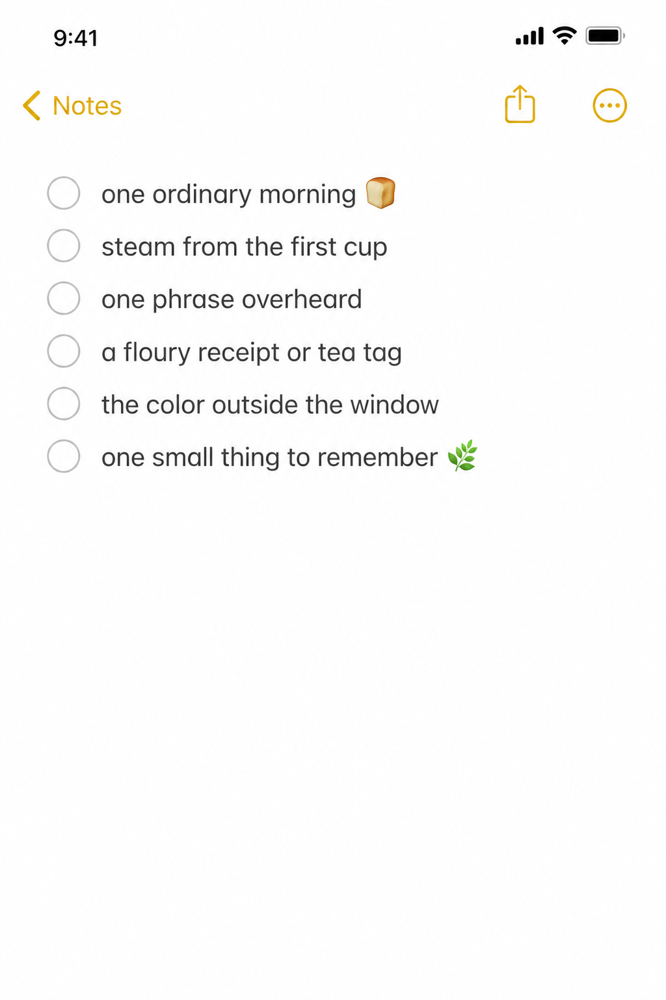
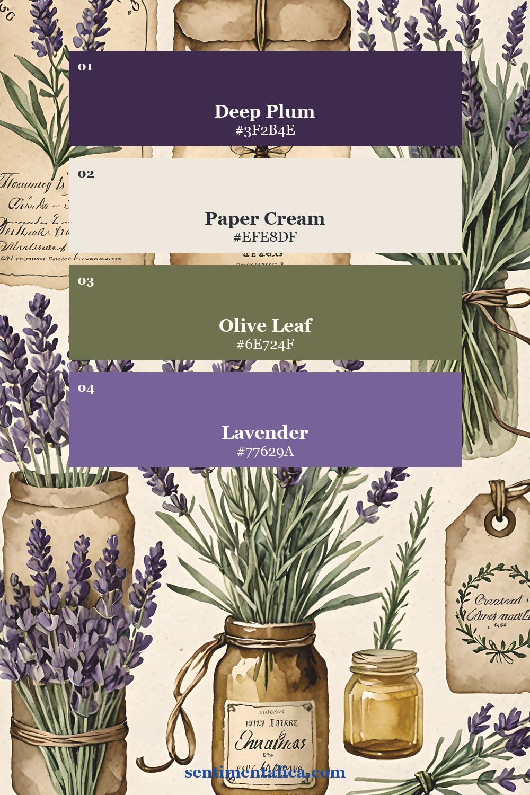
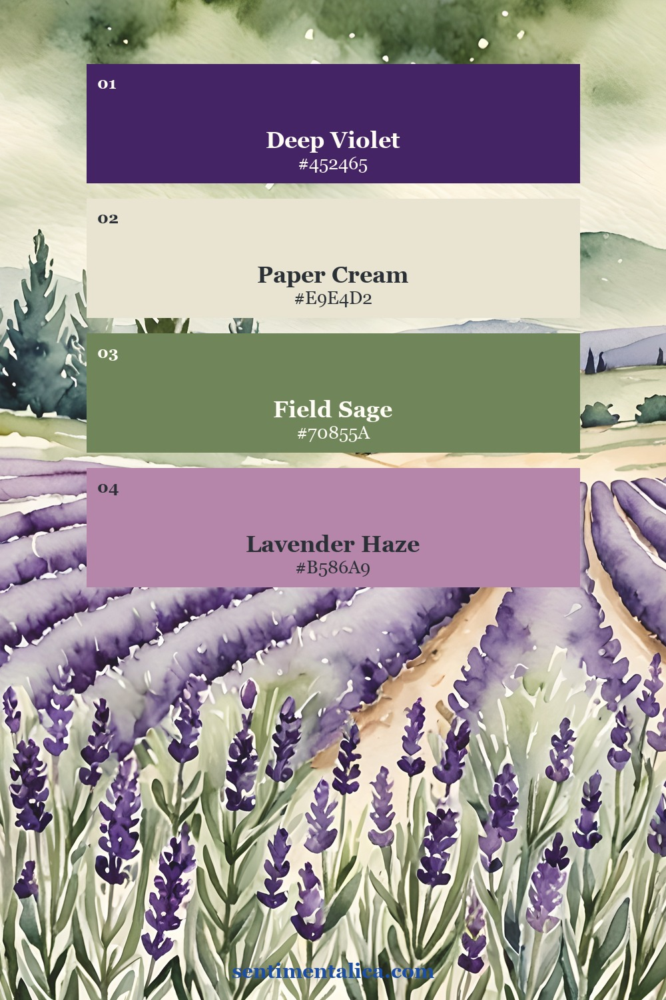
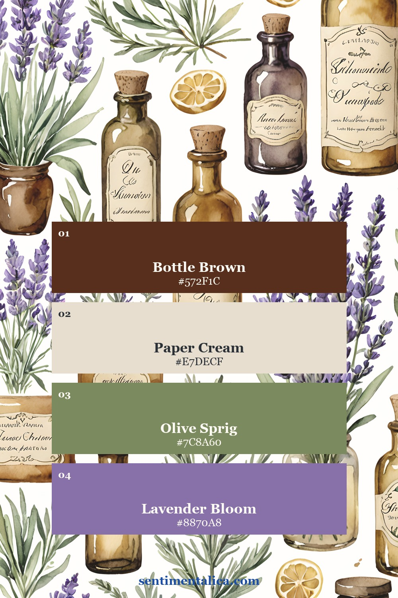
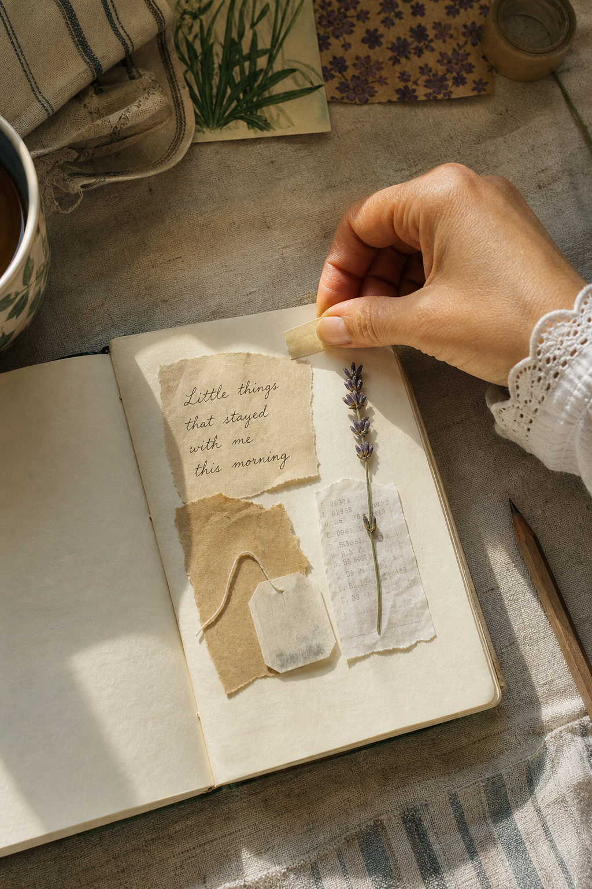
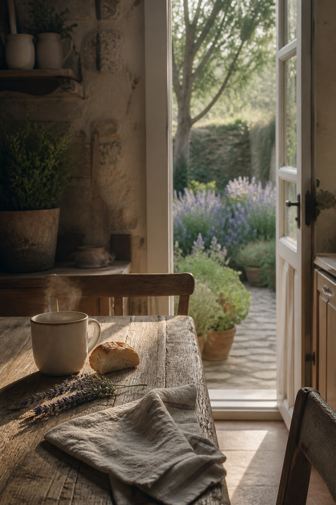
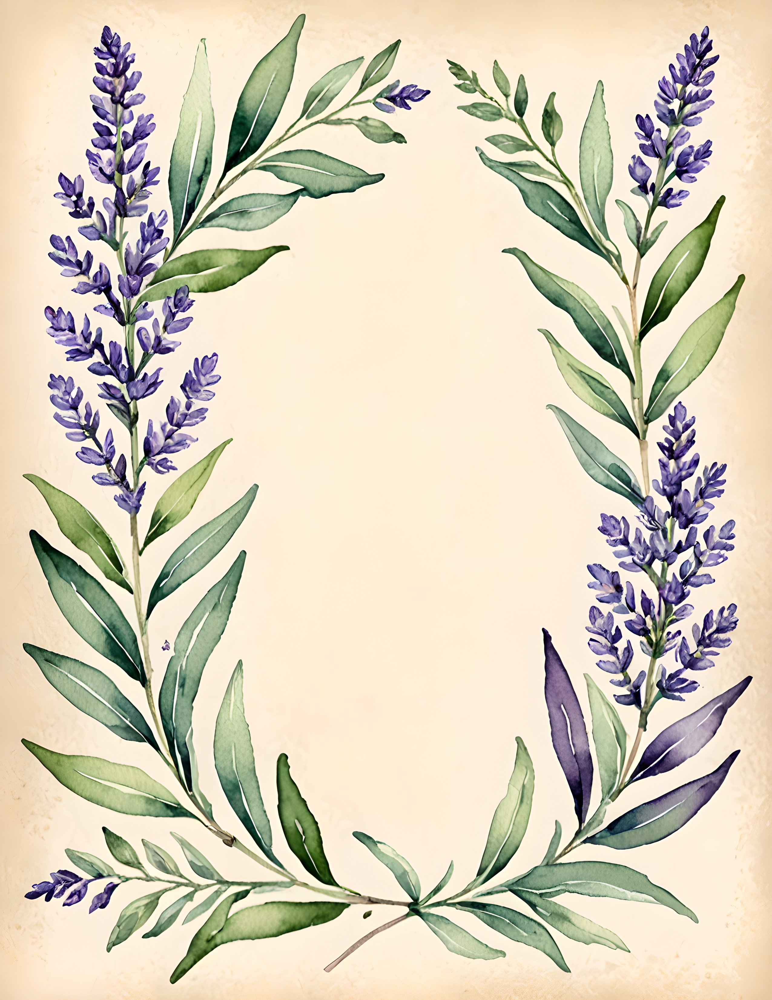
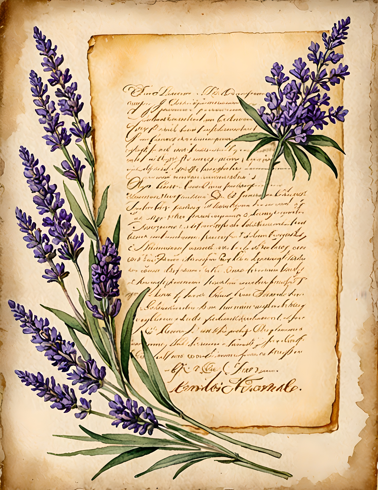
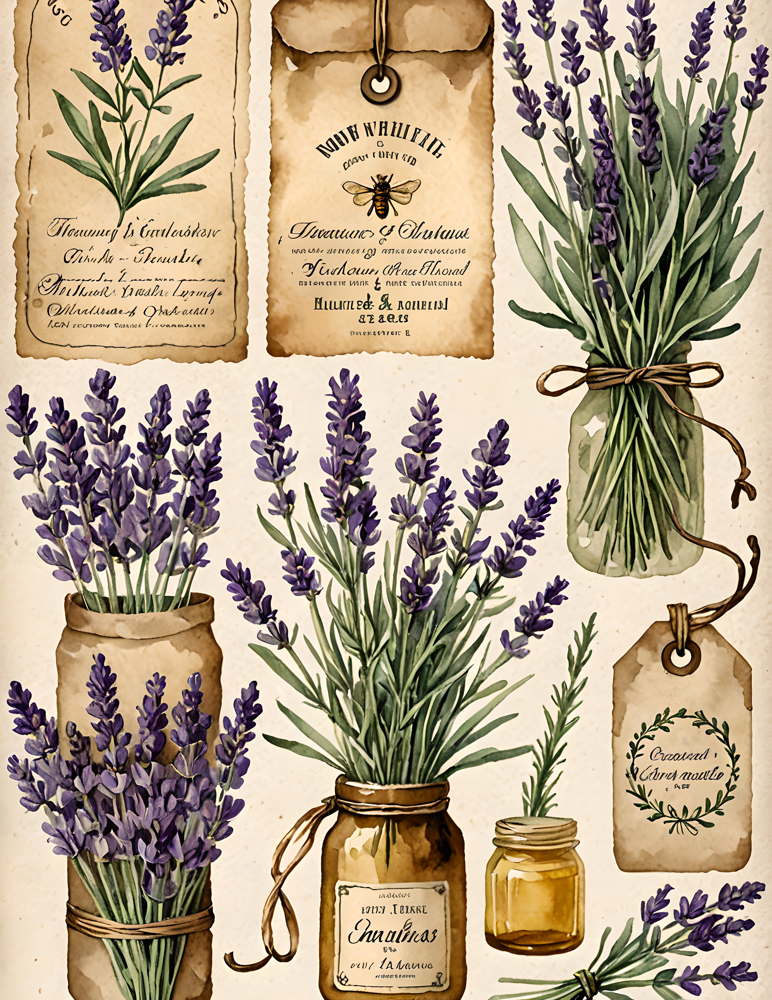

Cottagecore journal pages are most moving when they preserve ordinary life, not an imaginary perfect day. A warm cup, bread crumbs, the color outside the window, and one sentence you nearly forgot can become a complete page. You do not need a picnic basket or a country house. You only need to notice one morning closely.

Collect six details before noon
Write down the first sound you noticed, the weather, something you tasted, one useful task, a color, and a small sentence. The sentence might be something a person said, a line from a book, or your own thought while waiting for the kettle. Short fragments are enough. You are collecting evidence, not writing an essay.
Save one paper trace if you have it: a tea tag, bakery label, shopping receipt, seed packet, or scrap from a grocery list. If there is nothing to keep, make a tiny label with the date and the name of the morning.
Choose the color that was actually there
Cottagecore is often shown in green and cream, but your morning may have been lilac, rainy gray, faded blue, or the warm brown of toast. Let that real color lead the page. Then add one supporting neutral and one small botanical accent.



If your keepsake is visually loud, use only a small torn section. A receipt does not need to be readable from top to bottom to hold the memory. A date, shop name, or unusual typeface can carry enough of the story.
Build the page like a kitchen table
Place the largest paper slightly off center. Add the saved trace as though it has just been set down beside it. Let a botanical clipping overlap one edge, then leave a clear space for two or three handwritten lines. Imperfect alignment helps. Cottagecore should feel gathered through use, not arranged for a catalogue.

Write in the present tense if you want the page to feel immediate: “The window is open. The tea is getting cold. Someone is cutting grass nearby.” Tiny observations make a stronger memory than a broad description of a lovely morning.
Repeat one shape to create calm
If your page includes a round cup stain, echo it with a circular label or wreath. If the receipt is narrow, repeat that shape with a bookmark or strip of text. Repetition quietly connects unlike objects and stops an everyday collection from looking accidental.

Let real pages suggest, not dictate
Lavender Mist offers several useful cottagecore directions: a wreath for a simple focal point, handwritten paper for a calm foundation, and tags for small layers. You can borrow one structure without copying the whole composition. The point is to give your own morning a gentle frame.



If you want an easy starting image, choose a flower from the 100 free floral pictures that matches the color you noticed outside. Add it to your paper trace, write three honest lines, and stop while the page still has air around it.
Your ordinary morning is already enough material. The value is not in making it look more picturesque. It is in noticing what would otherwise disappear. Find more quiet prompts in the Sentimentalica journal, or continue with the lavender pages below when you want a ready-made visual thread.